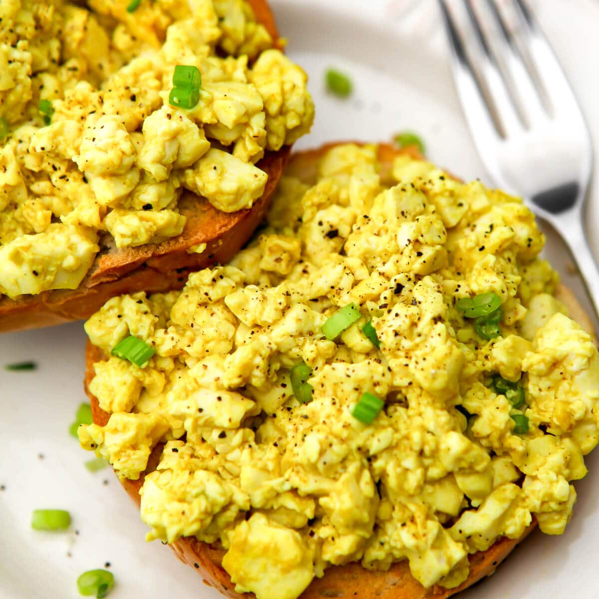

Vegan Eggs

The feel, texture and taste of scrambled eggs without the dairy and cholesterol!
If you love scrambled eggs in the morning but you keep going to the bathroom during the day? Try some scrambed eggs made from tofu!
Ingredients
- 500g tofu
- 2 tsp tumeric powder
- 1/2 tsp cumin powder
- Salt
- Black pepper
- 100ml soy milk
Steps
- Heat up frying pan with low to medium heat
- Crush the tofu on plate until they are into pieces like scrambled eggs
- Pour soy milk into heated pan along with tumeric and cumin
- Mix liquid until it's yellow in color
- Put crush tofu into pan and mix with yellow liquid until the tofu is saturated in yellow color
- put salt and black pepper in the amount you desire